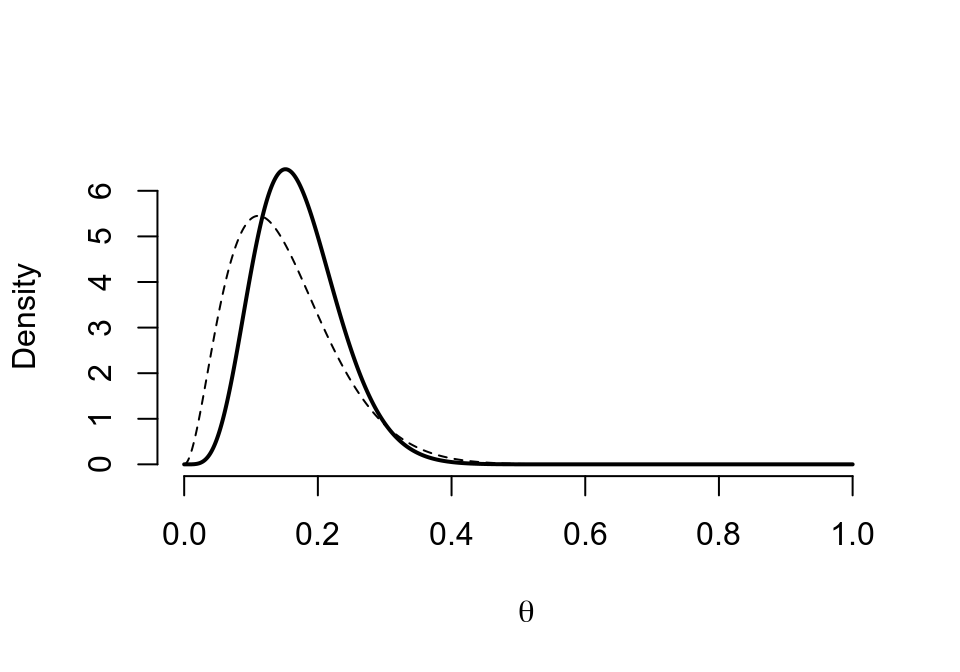

第 25 章 最小二乘估計的性質和推斷 Ordinary Least Squares Estimators and Inference
前一章介紹了簡單線性迴歸模型中對總體參數 \(\alpha, \beta, \sigma^2\) 的估計公式，分別是 (24.5) (24.6) (24.9)。本章繼續介紹他們的統計學性質。下面的標記和統計量也會被用到：
- \(\bar{y}=\frac{\sum_{i=1}^n y_i}{n}\)，因變量 \(y\) 的樣本均值；
- \(\bar{x}=\frac{\sum_{i=1}^n x_i}{n}\)，預測變量 \(x\) 的樣本均值；
- \(SS_{yy}=\sum_{i=1}^n(y_i-\bar{y})^2\)，因變量 \(y\) 的校正平方和；
- \(SS_{xx}=\sum_{i=1}^n(x_i-\bar{x})^2\)，預測變量 \(x\) 的校正平方和；
- \(SD_y^2=\frac{\sum_{i=1}(y_i-\bar{y})^2}{n-1}=\frac{SS_{yy}}{n-1}\)，因變量 \(y\) 的樣本方差；
- \(SD_x^2=\frac{\sum_{i=1}(x_i-\bar{x})^2}{n-1}=\frac{SS_{xx}}{n-1}\)，因變量 \(y\) 的樣本方差；
- \(S_{xy}=\sum_{i=1}^n(x_i-\bar{x})(y_i-\bar{y})\)，\(x,y\) 的交叉乘積；
- \(CV_{xy}=\frac{\sum_{i=1}^n(x_i-\bar{x})(y_i-\bar{y})}{n-1}=\frac{S_{xy}}{n-1}\)，樣本協方差；
- \(r_{xy}=\frac{CV_{xy}}{SD_xSD_y}\)，\(x,y\) 的樣本相關係數；
- \(SS_{RES}=\sum_{i=1}^n\hat\varepsilon^2=\sum_{i=1}^n(y_i-\hat\alpha-\hat\beta x_i)^2\)，殘差的估計平方和。
25.1 OLS 估計量的性質
- 樣本估計的迴歸直線必定穿過數據的中心 \((\bar{x},\bar{y})\)。
證明
由於樣本估計的截距和斜率公式 (24.5) (24.6) 可知：
\[ \begin{aligned} \hat\alpha &= \bar{y} - \hat\beta\bar{x} \\ \hat y_i &= \hat\alpha + \hat\beta x_i \\ \Rightarrow \hat y_i &= \bar{y}+\hat\beta(x_i-\bar{x}) \end{aligned} \tag{25.1} \]
所以，當 \(\hat x_i=\bar{x}\) 時 \(\hat y_i=\bar{y}\)。即迴歸直線必然穿過中心點。
- 如果擬合模型是正確無誤的， \(\hat\alpha,\hat\beta,\hat\sigma^2\) 分別是各自的無偏估計。
- \(\hat\alpha, \hat\beta\) 是極大似然估計， \(\hat\sigma^2\) 不是MLE。
- \(\hat\alpha, \hat\beta\) 是 \(\alpha, \beta\) 最有效的估計量。
25.2 \(\hat\beta\) 的性質
\[ \begin{equation} \hat\beta=\frac{S_{xy}}{SS_{xx}}=\frac{CV_{xy}}{SD_x^2} \end{equation} \tag{25.2} \]
25.2.1 \(Y\) 對 \(X\) 迴歸， 和 \(X\) 對 \(Y\) 迴歸
如果我們使用 \(\hat\beta_{y|x}\) 表示預測變量 \(x\)，因變量 \(y\) 的簡單線性迴歸係數，那麼我們就有：
\[ \begin{equation} \hat\beta_{y|x} = \frac{CV_{xy}}{SD_x^2} \text{ and } \hat\beta_{x|y} = \frac{CV_{xy}}{SD_y^2} \\ \text{Hence, } \hat\beta_{y|x}\hat\beta_{x|y} = r^2_{xy} \end{equation} \tag{25.3} \]
公式 (25.3) 也證明了：如果兩個變量相關係數爲 \(1\) (100% 相關)， \(Y\) 對 \(X\) 迴歸的迴歸係數，是 \(X\) 對 \(Y\) 迴歸的迴歸係數的倒數。
25.2.2 例 1： 還是圖 24.1 數據
library(haven)
growgam1 <- read_dta("backupfiles/growgam1.dta")
# regress wt on age
summary(lm(wt~age, data=growgam1))##
## Call:
## lm(formula = wt ~ age, data = growgam1)
##
## Residuals:
## Min 1Q Median 3Q Max
## -3.924 -0.785 0.007 0.797 4.068
##
## Coefficients:
## Estimate Std. Error t value Pr(>|t|)
## (Intercept) 6.8376 0.2101 32.5 <2e-16 ***
## age 0.1653 0.0111 14.9 <2e-16 ***
## ---
## Signif. codes:
## 0 '***' 0.001 '**' 0.01 '*' 0.05 '.' 0.1 ' ' 1
##
## Residual standard error: 1.27 on 188 degrees of freedom
## Multiple R-squared: 0.541, Adjusted R-squared: 0.538
## F-statistic: 221 on 1 and 188 DF, p-value: <2e-16print(anova(lm(wt~age, data=growgam1)), digits = 8)## Analysis of Variance Table
##
## Response: wt
## Df Sum Sq Mean Sq F value Pr(>F)
## age 1 359.06320 359.06320 221.39203 < 2.22e-16
## Residuals 188 304.90655 1.62184
##
## age ***
## Residuals
## ---
## Signif. codes:
## 0 '***' 0.001 '**' 0.01 '*' 0.05 '.' 0.1 ' ' 1# regress age on wt
summary(lm(age~wt, data=growgam1))##
## Call:
## lm(formula = age ~ wt, data = growgam1)
##
## Residuals:
## Min 1Q Median 3Q Max
## -16.010 -4.239 0.083 3.130 21.111
##
## Coefficients:
## Estimate Std. Error t value Pr(>|t|)
## (Intercept) -14.57 2.16 -6.75 1.8e-10 ***
## wt 3.27 0.22 14.88 < 2e-16 ***
## ---
## Signif. codes:
## 0 '***' 0.001 '**' 0.01 '*' 0.05 '.' 0.1 ' ' 1
##
## Residual standard error: 5.66 on 188 degrees of freedom
## Multiple R-squared: 0.541, Adjusted R-squared: 0.538
## F-statistic: 221 on 1 and 188 DF, p-value: <2e-16print(anova(lm(age~wt, data=growgam1)), digits = 8)## Analysis of Variance Table
##
## Response: age
## Df Sum Sq Mean Sq F value Pr(>F)
## wt 1 7103.6730 7103.6730 221.39203 < 2.22e-16
## Residuals 188 6032.2428 32.0864
##
## wt ***
## Residuals
## ---
## Signif. codes:
## 0 '***' 0.001 '**' 0.01 '*' 0.05 '.' 0.1 ' ' 1可以看到二者的輸出結果中統計檢驗量一樣，但是一個是將體重針對年齡迴歸，另一個則是反過來，所以迴歸係數和截距都不同。迴歸方程的含義也就發生了變化。如果把兩條迴歸曲線同時作圖可以更加直觀：
图 25.1: Simple linear regression model line relating weight to age
图 25.2: Simple linear regression model line relating age to weight
25.3 截距和迴歸係數的方差，協方差
假如簡單線性迴歸模型是正確的，那麼截距 \(\hat\alpha\) 和迴歸係數 \(\hat\beta\) 的方差分別是：
\[ \begin{equation} V(\hat\alpha) = \sigma^2(\frac{1}{n}+\frac{\bar{x}^2}{SS_{xx}}) = \frac{\sigma^2}{(n-1)} (1-\frac{1}{n}+\frac{\bar{x}^2}{SD_x^2}) \end{equation} \tag{25.4} \]
\[ \begin{equation} V(\hat\beta) = \frac{\sigma^2}{SS_{xx}}=\frac{\sigma^2}{(n-1)SD_x^2} \end{equation} \tag{25.5} \]
從公式 (25.4) 和 (25.5) 也可以看出，兩個估計量的方差隨着殘差方差的增加而增加 (估計不精確)，隨着樣本兩的增加而減少 (估計更精確)。截距 \(\hat\alpha\) 的方差會隨着樣本均值的增加而增加。
通常來說，截距和迴歸係數二者之間並非相互獨立。他們的協方差爲：
\[ \begin{equation} Cov(\hat\alpha,\hat\beta) = -\frac{\sigma^2\bar{x}}{SS_{xx}} \end{equation} \tag{25.6} \]
上面的公式 (25.4) (25.5) (25.6) 都包含了真實的殘差方差 \(\sigma^2\)。這個量對於我們“人類”來說是未知的。
25.3.1 中心化 centring
簡單線性迴歸模型常用的一個技巧是將預測變量中心化。即，求預測變量的均值，然後將每個觀測值減去均值之後再用這個新的預測變量擬合簡單線性迴歸模型。這樣做其實完全不影響回顧係數，卻會影響截距的大小。此時新的迴歸直線的截距，就等於因變量 (體重) 的均值。
用圖 24.1 數據來解釋：
# mean value of age
mean(growgam1$age)## [1] 16.98growgam1$age_cen <- growgam1$age-mean(growgam1$age)
# regress wt on age
print(summary(lm(wt~age, data=growgam1)), digit=5)##
## Call:
## lm(formula = wt ~ age, data = growgam1)
##
## Residuals:
## Min 1Q Median 3Q Max
## -3.92418 -0.78489 0.00710 0.79747 4.06781
##
## Coefficients:
## Estimate Std. Error t value Pr(>|t|)
## (Intercept) 6.837584 0.210070 32.549 < 2.2e-16 ***
## age 0.165331 0.011112 14.879 < 2.2e-16 ***
## ---
## Signif. codes:
## 0 '***' 0.001 '**' 0.01 '*' 0.05 '.' 0.1 ' ' 1
##
## Residual standard error: 1.274 on 188 degrees of freedom
## Multiple R-squared: 0.54078, Adjusted R-squared: 0.53834
## F-statistic: 221.39 on 1 and 188 DF, p-value: < 2.22e-16print(summary(lm(wt~age_cen, data=growgam1)), digit=5)##
## Call:
## lm(formula = wt ~ age_cen, data = growgam1)
##
## Residuals:
## Min 1Q Median 3Q Max
## -3.92418 -0.78489 0.00710 0.79747 4.06781
##
## Coefficients:
## Estimate Std. Error t value Pr(>|t|)
## (Intercept) 9.644737 0.092391 104.391 < 2.2e-16 ***
## age_cen 0.165331 0.011112 14.879 < 2.2e-16 ***
## ---
## Signif. codes:
## 0 '***' 0.001 '**' 0.01 '*' 0.05 '.' 0.1 ' ' 1
##
## Residual standard error: 1.274 on 188 degrees of freedom
## Multiple R-squared: 0.54078, Adjusted R-squared: 0.53834
## F-statistic: 221.39 on 1 and 188 DF, p-value: < 2.22e-16很明顯，結果顯示中心化不會改變迴歸係數，也不會改變它的方差。但是“新”的截距，其實就等於因變量 (體重) 的均值。而且很多數據都集中在這個均值附近，因而，截距的方差比沒有中心化的迴歸方程要小。
25.4 \(\alpha, \beta\) 的推斷
\(\hat\alpha, \hat\beta\) 都可以被改寫成關於因變量 \(Y\) 的方程，因此同時也是隨機誤差的方程式：
\[ \begin{aligned} \hat\beta &= \sum_{i=1}^n[\frac{(x_i-\bar{x})}{SS_{xx}}(y_i-\bar{y})] \\ \text{Substituting } &(y_i-\bar{y}) = \beta(x_i-\bar{x})+(\varepsilon_i-\bar{\varepsilon}) \\ &= \beta + \sum_{i=1}^n[\frac{x_i-\bar{x}}{SS_{xx}}(\varepsilon_i-\bar{\varepsilon})] \end{aligned} \]
又因爲，\(\varepsilon_i \sim NID(0,\sigma^2)\)，估計量 \(\hat\alpha, \hat\beta\) 均爲 \(\varepsilon_i\) 的線性轉換，所以他們也都是服從正態分佈的。
25.4.1 對迴歸係數進行假設檢驗
對於迴歸係數 \(\beta\)，我們可以使用 Wald statistic (Section 16.4) 進行零假設爲 \(\text{H}_0: \beta=0\) 的假設檢驗。此時，替代假設爲 \(\text{H}_1: \beta\neq0\)。最佳檢驗統計量爲：
\[ \begin{equation} t = \frac{\hat\beta-0}{SE(\hat\beta)} \\ \end{equation} \tag{25.7} \]
根據公式 (25.5) \(SE(\hat\beta) = \sqrt{V(\hat\beta)} = \frac{\hat\sigma}{\sqrt{SS_{xx}}}\)。用 \(\hat\sigma^2\) 替換掉公式 (25.5) 中的 \(\sigma^2\)，意味着迴歸係數的檢驗統計量 \(t\) 服從自由度爲 \(n-2\) 的 \(t\) 分佈。之後就可以根據 \(t\) 分佈的性質求相應的 \(p\) 值了，對相關係數是否爲 \(0\) 進行檢驗。之所以我們可以在這裏使用 Wald 檢驗，是因爲前提條件：隨機誤差服從正態分佈，於是 \(\beta\) 的對數似然比也是左右對稱的，當對數似然比的圖形左右對稱時，就可以使用二次方程來近似 (Wald 檢驗的實質)。
25.4.2 迴歸係數，截距的信賴區間
估計量 \(\beta\) 的 \(95\%\) 信賴區間的計算公式如下：
\[ \begin{equation} \hat\beta \pm t_{n-2,0.975}SE(\hat\beta) \end{equation} \tag{25.8} \]
其中，\(t_{n-2, 0.975}\) 表示自由度爲 \(n-2\) 的 \(t\) 分佈的 \(97.5\%\) 位點的值。繼續使用之前的實例，圖 24.1 中的數據。體重對年齡進行簡單線性迴歸之後，年齡的估計回顧係數 \(\hat\beta=0.165, SE(\hat\beta)=0.0111\), 此例中 \(n=190\)，所以 \(t_{188, 0.975}=1.973\)。所以迴歸係數的 \(95\%\) 信賴區間可以如此計算：\(0.165\pm1.973\times0.0111=(0.143, 0.187)\)。
類似的，估計截距 \(\hat\alpha\) 的 \(95\%\) 信賴區間的計算式便是： \(\hat\alpha \pm t_{n-2, 0.975}SE(\hat\alpha)\)。同樣的例子裏，\(\hat\alpha=6.838, SE(\hat\beta) = 0.210, t_{188, 0.975}=1.973\)。所以截距的 \(95\%\) 信賴區間的計算方法就是： \(6.838\pm1.973\times0.210=(6.42, 7.25)\)
跟下面 R 計算的完全一樣：
confint(lm(wt~age, data=growgam1))## 2.5 % 97.5 %
## (Intercept) 6.4232 7.2520
## age 0.1434 0.187325.4.3 預測值的信賴區間 (置信带) - 测量回归曲线本身的不确定性
這裏所謂的“預測值”其實並沒有拿來預測什麼新的數值，而是說我們希望通過線性迴歸找到因變量真實值的存在區間 (信賴區間)。所以這個預測值的真實含義其實應該是在預測變量取 \(X=x\) 時，因變量的期待值，\(E(Y|X=x)\)。
這個預測值的方差公式如下：
\[ \begin{equation} V(\hat y_{x}) = \sigma^2[\frac{1}{n}+\frac{(x_i-\bar{x})^2}{SS_{xx}}] \end{equation} \tag{25.9} \]
於是可以計算它的 \(95\%\) 信賴區間公式是：
\[ \begin{equation} \hat y_x \pm t_{n-2, 0.975} \hat\sigma \sqrt{[\frac{1}{n}+\frac{(x-\bar{x})^2}{SS_{xx}}]} \end{equation} \tag{25.10} \]
其實在之前的圖 (圖 24.2) 我們也已經展示過這個信賴區間的範圍。
25.4.4 预测带 Reference range - 包含了 95% 观察值的区间
此處的 \(95\%\) 預測帶，其實是包含了 \(95\%\) 觀察數據的區間。所以預測帶要比置信帶更寬。它的方差計算公式爲：
\[ \begin{equation} V(\hat y_x)+\sigma^2 = \sigma^2[1+\frac{1}{n}+\frac{(x-\bar{x})^2}{SS_{xx}}] \end{equation} \tag{25.11} \]
區間計算公式爲：
\[ \begin{equation} \hat{y}_x \pm t_{n-2, 0.975} \sqrt{1+\frac{1}{n}+\frac{(x-\bar{x})^2}{SS_{xx}}} \end{equation} \tag{25.12} \]
將置信帶和預測帶同時展現則如下圖：
library(haven)
library(ggplot2)
library(ggthemes)
growgam1 <- read_dta("backupfiles/growgam1.dta")
Model <- lm(wt~age, data=growgam1)
temp_var <- predict(Model, interval="prediction")
new_df <- cbind(growgam1, temp_var)
ggplot(new_df, aes(x=age, y=wt)) + geom_point(shape=20, colour="grey40") +
stat_smooth(method = lm, se=FALSE, size = 0.3) +
geom_line(aes(y=lwr), color = "red", linetype = "dashed")+
geom_line(aes(y=upr), color = "red", linetype = "dashed")+
scale_x_continuous(breaks=seq(0, 38, 4),limits = c(0,36.5))+
scale_y_continuous(breaks = seq(0, 20, 5),limits = c(0,20.5)) +
theme_stata() +labs(x = "Age (Months)", y = "Weight (kg)")图 25.3: Simple linear regression for age and weight of children in a cross-sectional survey with 95% CI of predicted values and 95% reference range
25.5 線性迴歸模型和 Pearson 相關係數
前面也推導過線性迴歸係數和 Pearson 相關係數之間的關係 (Section 25.2.1)，這裏詳細再展開討論它們之間關係的另外兩個重要結論。
25.5.1 \(r^2\) 可以理解爲因變量平方和被模型解釋的比例
Pearson 相關係數，因變量的平方和，模型的殘差平方和之間有如下的關係：
\[ \begin{equation} r^2 = \frac{SS_{yy}-SS_{RES}}{SS_{yy}} = 1-\frac{SS_{RES}}{SS_{yy}} \end{equation} \tag{25.13} \]
證明
\[ \frac{SS_{RES}}{SS_{yy}} = \frac{\sum_{i=1}^n(y_i-\hat\alpha-\hat\beta x_i)^2}{\sum_{i=1}^n(y_i-\bar{y})^2} \]
因爲 (24.5) : \(\hat\alpha=\bar{y}-\hat{\beta}\bar{x}\)
\[ \begin{aligned} \frac{SS_{RES}}{SS_{yy}} &= \frac{\sum_{i=1}^n[(y_i-\bar{y})-\hat\beta(x_i-\bar{x})]^2}{\sum_{i=1}^n(y_i-\bar{y})^2} \\ &=\frac{\sum_{i=1}^n(y_i-\bar{y})^2}{\sum_{i=1}^n(y_i-\bar{y})^2}-\frac{2\hat\beta\sum_{i=1}^n(x_i-\bar{x})(y_i-\bar{y})}{\sum_{i=1}^n(y_i-\bar{y})^2}+\frac{\hat\beta^2\sum_{i=1}^n(x_i-\bar{x})^2}{\sum_{i=1}^n(y_i-\bar{y})^2}\\ &=1-\frac{2\hat\beta SS_{xy}}{SS_{yy}} + \frac{\hat\beta^2SS_{xx}}{SS_{yy}} \end{aligned} \]
又因爲 \(\hat\beta=\frac{\sum_{i=1}^n(x_i-\bar{x})(y_i-\bar{y})}{\sum_{i=1}^n(x_i-\bar{x})^2}=\frac{S_{xy}}{SS_{xx}}, r^2=\frac{S_{xy}^2}{SS_{xx}SS_{yy}}\)。
\[ \begin{aligned} \frac{SS_{RES}}{SS_{yy}} &= 1-\frac{2S_{xy}^2}{SS_{yy}SS_{xx}}+\frac{S_{xy}^2}{SS_{xx}SS_{yy}}\\ &=1-2r^2+r^2\\ &=1-r^2\\ \Rightarrow r^2&=1-\frac{SS_{RES}}{SS_{yy}} \end{aligned} \]
因此，這裏就引出了非常重要的一個結論，Pearson 相關係數的平方 \(r^2\) 的統計學含義是，因變量的平方和 \(SS_{yy}\) 中，模型的預測變量能夠解釋的部分 \(1-SS_{RES}\) 的百分比。 統計學結果的報告中，爲了和一般相關係數的意義區分，會用大寫的 \(R^2\) 來表示這個模型解釋了因變量的百分比。(Section 26.2.3)
25.6 Pearson 相關係數和模型迴歸係數的檢驗統計量 \(t\) 之間的關係
\[ \begin{equation} t=r\sqrt{\frac{n-2}{1-r^2}} \end{equation} \tag{25.14} \]
證明
由於前面推導的 \(r^2\) 公式 (25.13)，而且 \(r^2=\frac{S_{xy}^2}{SS_{xx}SS_{yy}}\)：
\[ \begin{aligned} \frac{r^2}{1-r^2} & = \frac{\frac{S_{xy}^2}{SS_{xx}SS_{yy}}}{\frac{SS_{RES}}{SS_{yy}}} \\ & = \frac{S_{xy}^2}{SS_{xx}SS_{RES}} \\ & = \frac{S_{xy}^2}{SS_{xx}(n-2)\hat\sigma^2} \end{aligned} \]
由於公式 (25.5)，所以 \(\hat\sigma^2=V(\hat\beta)SS_{xx}\)
\[ \begin{aligned} \frac{r^2}{1-r^2} & = \frac{S_{xy}^2}{SS^2_{xx}(n-2)V(\hat\beta)} \\ & = \frac{\hat\beta^2}{(n-2)V(\hat\beta)} \\ \Rightarrow t=r\sqrt{\frac{n-2}{1-r^2}} \end{aligned} \]
這個結論也被用於相關係數的假設檢驗。而且也正如 Section 25.2.1 證明過的那樣，在簡單線性迴歸裏因變量和預測變量的位置對調以後，對於回顧係數是否爲零的檢驗統計量不受影響。
25.7 練習
數據同前一章練習部分數據相同 24.8：
# 數據讀入
library(haven)
library(ggplot2)
library(ggthemes)
Chol <- read_dta("backupfiles/chol.dta")
Model <- lm(chol2~chol1, data=Chol)
print(summary(Model), digit=6)##
## Call:
## lm(formula = chol2 ~ chol1, data = Chol)
##
## Residuals:
## Min 1Q Median 3Q Max
## -56.87654 -22.06181 1.84937 16.63107 84.11839
##
## Coefficients:
## Estimate Std. Error t value Pr(>|t|)
## (Intercept) 110.4246582 20.0113279 5.51811 2.8499e-07
## chol1 0.5786806 0.0747598 7.74053 9.5114e-12
##
## (Intercept) ***
## chol1 ***
## ---
## Signif. codes:
## 0 '***' 0.001 '**' 0.01 '*' 0.05 '.' 0.1 ' ' 1
##
## Residual standard error: 30.16 on 97 degrees of freedom
## Multiple R-squared: 0.381834, Adjusted R-squared: 0.375462
## F-statistic: 59.9159 on 1 and 97 DF, p-value: 9.51139e-12print(anova(Model), digit=6)## Analysis of Variance Table
##
## Response: chol2
## Df Sum Sq Mean Sq F value Pr(>F)
## chol1 1 54511.7 54511.7 59.9159 9.5114e-12 ***
## Residuals 97 88250.9 909.8
## ---
## Signif. codes:
## 0 '***' 0.001 '**' 0.01 '*' 0.05 '.' 0.1 ' ' 1# 計算截距和迴歸係數的 P 值 HAND CALCULATIONS twosided p-value in R can be obtained by pt(t, df) function
## p value for intercept:
110.42466/20.01133 #=5.518107## [1] 5.5182*pt(5.518107, 97, lower.tail = FALSE)## [1] 2.85e-07## p value for beta:
0.57868/0.07476 #= 7.740503## [1] 7.7412*pt(7.740503, 97, lower.tail = FALSE)## [1] 9.513e-12# add fitted regression lines 95% CIs and reference range
temp_var <- predict(Model, interval="prediction")
new_df <- cbind(Chol, temp_var)
ggplot(new_df, aes(x=chol1, y=chol2)) + geom_point(shape=20, colour="grey40") +
stat_smooth(method = lm, se=TRUE, size=0.5) +
geom_line(aes(y=lwr), color = "red", linetype = "dashed")+
geom_line(aes(y=upr), color = "red", linetype = "dashed")+
scale_x_continuous(breaks=seq(150, 400, 50),limits = c(150, 355))+
scale_y_continuous(breaks=seq(150, 400, 50),limits = c(150, 355)) +
theme_stata() +labs(x = "Cholesterol at visit 1 (mg/100ml)", y = "Cholesterol at visit 2 (mg/100ml)")
圖中可見，95% 置信帶變化顯著，距離均值越遠的地方，置信帶越寬。然而預測帶基本是平行的沒有變化。因爲預測帶的涵義是，95%的觀察數據都在這個區間範圍內。